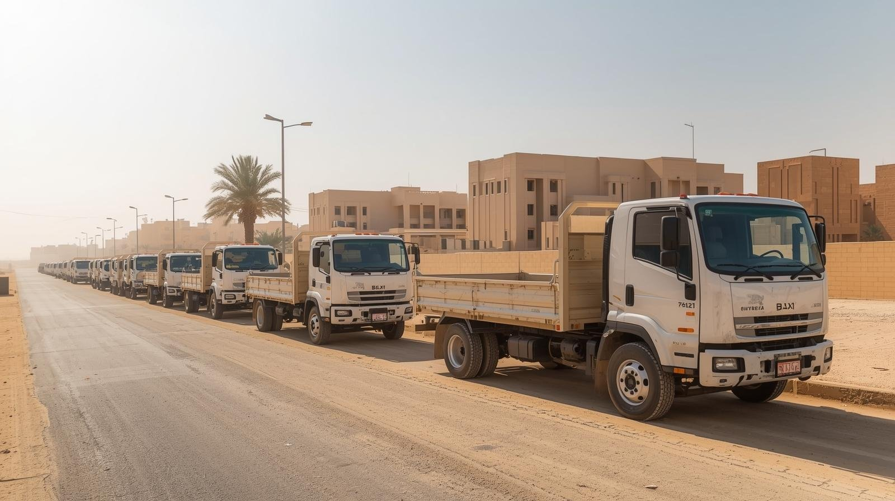

سيارات نصف نقل لنقل العفش بالرياض | 0541145506

تعد سيارات نصف نقل لنقل العفش بالرياض من الحلول الأكثر شيوعًا وفعالية لنقل الأثاث والمقتنيات الشخصية بين الأحياء والمناطق المختلفة في المدينة، توفر هذه السيارات سهولة في التحميل والتفريغ، مع قدرة ممتازة على التعامل مع الأثاث المتوسط الحجم، مما يجعلها الخيار الأمثل للعائلات والمكاتب الصغيرة، إذا كنت تبحث عن خدمة موثوقة، تقدم شركة نقل الرياض أفضل الحلول من خلال سيارة نقل عفش صغيرة بالرياض لنقل الأغراض المحدودة بسهولة وسرعة، أو الاعتماد على عربية نصف نقل لنقل العفش لتوفير الوقت والجهد وضمان سلامة الأثاث أثناء النقل، تواصل الآن مع الشركة من خلال الضغط على ايقونة الواتس اب.
أفضل سيارات نصف نقل لنقل العفش بالرياض
عند البحث عن أفضل سيارات نصف نقل لنقل العفش بالرياض، من المهم اختيار السيارة التي تجمع بين القوة والمرونة لضمان سلامة الأثاث أثناء النقل، توفر شركة نقل الرياض مجموعة متنوعة من السيارات، بما في ذلك سيارة نقل عفش صغيرة بالرياض للنقل المحدود وعربية نص نقل لنقل العفش للأثاث المتوسط والكبير، ما يجعلها مناسبة لجميع الاحتياجات، تتميز هذه السيارات بسهولة التحميل والتفريغ، مع قدرات عالية على المناورة في الشوارع الضيقة، مما يجعل تجربة النقل أكثر سلاسة وأمانًا، ويضمن وصول أغراضك في الوقت المحدد وبأمان تام.
مميزات سيارة نقل عفش صغيرة بالرياض بأسعار مناسبة
تُعد سيارات نصف نقل لنقل العفش بالرياض الخيار الأمثل لمن يبحث عن وسيلة نقل مرنة وآمنة للأثاث، سواء للمنزل أو المكتب، تتميز هذه السيارات بقدرتها على المناورة في الشوارع الضيقة، مما يجعلها مثالية للأحياء المزدحمة في الرياض، تقدم شركة نقل الرياض مجموعة متنوعة من سيارات نقل عفش صغيرة بالرياض بأسعار مناسبة وجودة عالية، لتضمن وصول أغراضك بأمان وسرعة، لا تنتظر أكثر واحجز سيارتك الآن مع شركة نقل الرياض عبر الضغط على ايقونة الواتس اب للحصول على أفضل خدمة نقل عفش في الرياض.
متى تحتاج إلى عربية نص نقل لنقل الأثاث داخل الرياض؟
تُعتبر عربية نص نقل لنقل العفش الخيار الأمثل عندما يكون حجم الأثاث كبيرًا أو عندما تحتاج لنقل كمية أكبر من الأغراض، مثل الانتقال من شقة إلى منزل واسع أو لنقل أثاث المكاتب، تساعد هذه السيارات على تقليل عدد الرحلات وتوفير الوقت والجهد، مع ضمان سلامة الأثاث أثناء النقل. إذا كنت تبحث عن خدمة موثوقة وسريعة، تقدم شركة نقل الرياض أفضل الحلول من خلال سيارات مجهزة ومناسبة لجميع أنواع النقل داخل المدينة.
أفضل شركة نقل عفش وادي الدواسر
أسعار تأجير سيارات نصف نقل لنقل العفش بالرياض
تختلف أسعار تأجير سيارات نصف نقل لنقل العفش بالرياض حسب حجم الأثاث والمسافة ومدة النقل ويتراوح ما بين 300 ريال و 700 ريال، بشكل عام، توفر هذه السيارات حلاً اقتصاديًا ومرنًا لنقل العفش داخل المدينة، سواء للشقق الصغيرة أو المنازل الكبيرة، كما توفر بعض الشركات خيارات متعددة مثل سيارة نقل عفش صغيرة بالرياض وعربية نص نقل لنقل العفش لتناسب جميع الاحتياجات. إذا كنت تبحث عن خدمة موثوقة وبأسعار مناسبة، يمكن الاعتماد على شركة نقل الرياض لتأجير سيارات نصف نقل مجهزة بالكامل، مع ضمان سلامة أغراضك وتوفير الوقت والجهد.
الفرق بين سيارة نص نقل وعربية نقل عفش صغيرة
عند اختيار وسيلة نقل الأثاث في الرياض، من المهم معرفة الفرق بين سيارة نص نقل وعربية نقل عفش صغيرة.
- سيارة نص نقل: تتميز بحجم أكبر وقدرة على نقل الأثاث المتوسط والكبير، ما يقلل عدد الرحلات ويتيح نقل كميات أكبر في مرة واحدة.
- عربية نقل عفش صغيرة: مناسبة للشقق والمكاتب الصغيرة، حيث يمكنها نقل كمية محدودة من الأثاث بسهولة وسرعة، وتتميز بسهولة المناورة في الشوارع الضيقة.
توفر شركة نقل الرياض كلا الخيارين بمواصفات عالية وأسعار مناسبة، لتلبية جميع احتياجات النقل داخل المدينة، احجز الآن مع شركة نقل الرياض واستمتع بخدمة آمنة وسريعة لنقل أثاثك.
خطوات حجز سيارة نصف نقل لنقل العفش بسهولة
لحجز سيارات نصف نقل لنقل العفش بالرياض بسهولة وسرعة، يمكن اتباع الخطوات التالية:
- تحديد حجم الأثاث واحتياجات النقل: قيّم كمية الأثاث ونوعه والمسافة المطلوبة لتحديد السيارة المناسبة، سواء كانت سيارة نقل عفش صغيرة بالرياض أو عربية نص نقل لنقل العفش.
- التواصل مع شركة نقل الرياض: تواصل مباشرة مع فريق شركة نقل الرياض لطلب الخدمة والحصول على عرض السعر المناسب.
- تحديد موعد النقل: اختر اليوم والوقت المناسب لإتمام عملية النقل مع توفير الوقت الكافي لتحميل الأثاث.
- تأكيد الحجز والدفع: بعد الاتفاق على السعر والخدمة، قم بتأكيد الحجز والدفع بسهولة وأمان.
- الاستعداد للنقل: حضّر الأثاث للتغليف والتعبئة لتسهيل عملية النقل وضمان سلامته.
لا تنتظر! احجز الآن مع شركة نقل الرياض واستمتع بتجربة نقل آمنة وسلسة دون عناء.
خدمة سيارات نقل عفش صغيرة مع عمالة متخصصة
توفر شركة نقل الرياض خدمة سيارات نصف نقل لنقل العفش بالرياض مع عمالة متخصصة ومدربة للتعامل مع الأثاث بعناية واحترافية، تعتبر هذه الخدمة مثالية للشقق والمكاتب الصغيرة، حيث يمكن الاعتماد على سيارة نقل عفش صغيرة بالرياض لنقل الأغراض المحدودة بسهولة.
تعمل العمالة المتخصصة على تحميل وتفريغ الأثاث بطريقة منظمة، مما يقلل من خطر الخدوش أو التلف، ويسهم في تسريع عملية النقل بشكل آمن وفعال. كما تساعد السيارات الصغيرة على المناورة بسهولة في الشوارع الضيقة، مع الحفاظ على سلامة الأثاث والأغراض أثناء النقل.
هل سيارات نصف النقل مناسبة لنقل الأثاث الكبير؟
تُعد سيارات نصف نقل لنقل العفش بالرياض خيارًا ممتازًا للأثاث المتوسط والكبير، خاصةً عند الانتقال من شقة إلى منزل أكبر أو لنقل قطع أثاث المكاتب، توفر هذه السيارات مساحة واسعة داخل الصندوق الخلفي وقدرة على تحميل قطع كبيرة مثل الأرائك والخزائن والطاولات.
مع ذلك، في حال كان الأثاث ضخمًا جدًا أو بكميات كبيرة جدًا، قد تكون الحاجة إلى أكثر من رحلة أو استخدام سيارات أكبر أمرًا ضروريًا لضمان النقل بأمان وراحة، تساعد هذه السيارات على تقليل عدد الرحلات مقارنة بالسيارات الصغيرة، مع الحفاظ على سلامة الأثاث أثناء النقل داخل المدينة.
نصائح لاختيار أفضل عربية نص نقل لنقل العفش بالرياض
عند اختيار عربية نص نقل لنقل العفش داخل الرياض، هناك بعض النصائح التي تساعدك في اتخاذ القرار الصحيح:
- تحديد حجم الأثاث وكمية النقل: اختر العربية بناءً على حجم الأثاث وعدد القطع لتقليل عدد الرحلات وضمان سهولة النقل.
- التحقق من حالة السيارة: تأكد من أن السيارة مجهزة جيدًا، بحالة ميكانيكية ممتازة وصندوق خلفي واسع ومناسب للأثاث الكبير والمتوسط.
- الاعتماد على شركات موثوقة: اختيار شركة محترفة مثل شركة نقل الرياض يضمن سيارات مجهزة وطاقم عمل مدرب للتعامل مع الأثاث بعناية.
- التأكد من التراخيص والتأمين: تحقق من أن العربية مؤمنة ومرخصة، ما يوفر حماية إضافية لأثاثك أثناء النقل.
اتباع هذه النصائح يضمن لك اختيار أفضل سيارات نصف نقل لنقل العفش بالرياض بطريقة آمنة وفعّالة، مع الحفاظ على سلامة الأثاث وسهولة النقل داخل المدينة.
أفضل شركة توفر سيارات نصف نقل ونقل عفش صغير بالرياض
إذا كنت تبحث عن خدمة موثوقة لنقل الأثاث داخل الرياض، تعتبر شركة نقل الرياض الخيار الأمثل، توفر الشركة سيارات نصف نقل لنقل العفش بالرياض مجهزة خصيصًا للتعامل مع جميع أنواع الأثاث، بالإضافة إلى سيارات نقل عفش صغيرة بالرياض لتلبية احتياجات الشقق والمكاتب الصغيرة، يتميز فريق العمل بالخبرة والكفاءة، مع الالتزام بالحفاظ على سلامة الأثاث وسرعة إنجاز عملية النقل، بفضل تنوع الأسطول والخدمات المتكاملة، تضمن شركة نقل الرياض تجربة نقل سلسة وآمنة لجميع العملاء داخل المدينة.
تُعد سيارات نصف نقل لنقل العفش بالرياض الحل الأمثل لكل من يبحث عن وسيلة آمنة وفعّالة لنقل الأثاث داخل المدينة، سواء للشقق الصغيرة أو المنازل الكبيرة، توفر هذه السيارات مرونة كبيرة وقدرة على التعامل مع الأثاث المتنوع، مع تقليل عدد الرحلات وتوفير الوقت والجهد، بالاعتماد على شركة موثوقة مثل شركة نقل الرياض، يمكنك ضمان نقل أثاثك بأمان واحترافية، مع الاستفادة من خيارات متعددة تناسب جميع الاحتياجات والأحجام، اختر الخدمة المناسبة لك واستمتع بتجربة نقل سلسة وسريعة دون أي قلق على أغراضك، للتواصل مع الشركة اضغط على ايقونة الواتس اب.
الأسئلة الشائعة حول سيارات نصف نقل لنقل العفش بالرياض
ما هي خدمات سيارات نصف نقل لنقل العفش بالرياض؟
توفر هذه السيارات نقل الأثاث بكميات متوسطة، سواء للشقق أو المكاتب، مع إمكانية الاعتماد على فريق متخصص للتغليف والفك والتركيب.
هل يمكن استخدام سيارة نقل عفش صغيرة بالرياض للشقق الصغيرة؟
نعم، سيارات النقل الصغيرة مثالية للشقق والمكاتب الصغيرة، حيث توفر سهولة المناورة وتقليل عدد الرحلات.
ما الفرق بين سيارة نص نقل وعربية نقل عفش صغيرة؟
سيارة نص نقل أكبر وتناسب الأثاث المتوسط والكبير، بينما العربية الصغيرة مناسبة للشقق والمكاتب ذات الأثاث المحدود.